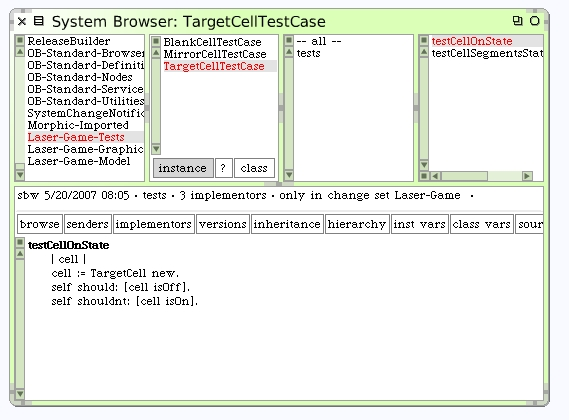
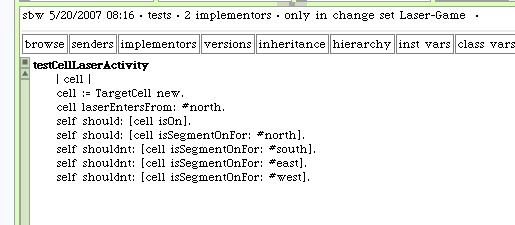

TargetCell Unit Tests
We can borrow some tests from the BlankCell test case again. Create the new subclass of TestCase named TargetCellTestCase. Modify the cell class in the tests accordingly.
We can write the #testCellExitSides a little differently since we always expect the results to be nil. The #testCellLaserActivity method should only find one segment lit-up when the laser beam enters.
When our new test case is included in the test runner, we run all of our tests and see that everything works as expected. You should see the Test Runner reporting that 14 tests were run and passed. If your count is less than 14 check that you have all three of the unit tests selected in the Test Runner.